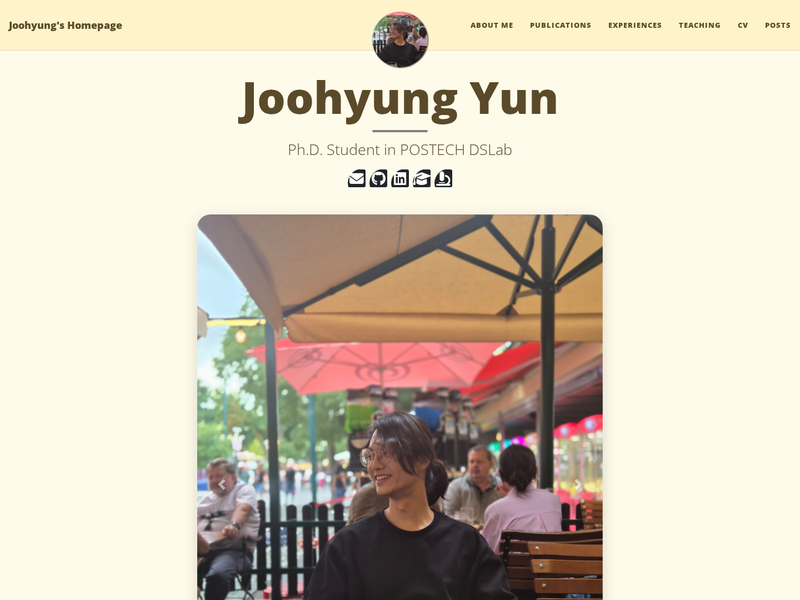

Previous versions of this site, kept alive as static snapshots. Each redesign adds a row here before it goes live, so old and new can be compared side by side.

Fork of the Beautiful Jekyll theme. Yellow paper background, six tabs (About / Publications / Experiences / Teaching / CV / Posts), a full-width photo carousel on the home page, accordion cards for publications and experiences.